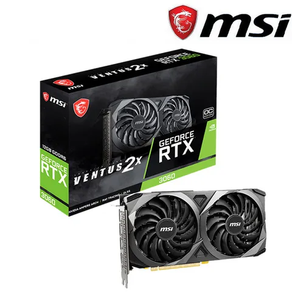
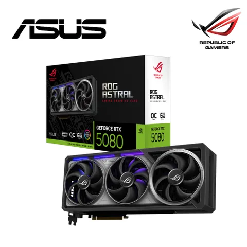
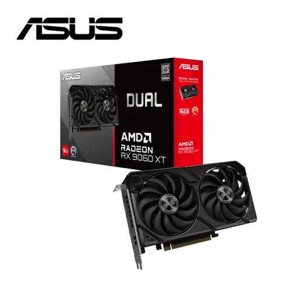

這是一個使用 Bootstrap 建立的簡單響應式頁面。
最受信仰與信賴
MSI GeForce RTX™ 30 電競系列顯示卡，帶來性能、低噪與美學最佳融合的完美設計，在低溫安靜環境下，仍能享受高性能暢玩體驗。

極致效能 全面創新
ROG Astral GeForce RTX 5080 採四風扇設計與專利散熱技術，展現頂尖效能與穩定性。

小巧高效 強勁散熱
ASUS Dual Radeon™ RX 9060 XT 結合強大散熱與高相容性，提供緊湊卻強悍的效能。
